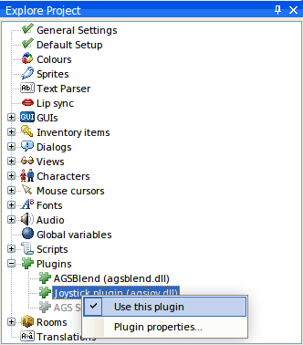

AGS supports user-written plugins in order to provide functionality to your game that AGS itself does not support.
The plugin developer's guide is available from the Resources section of the AGS website.
Plugins come as DLL files with the names AGS*.DLL, for example agscircle.dll might be a plugin providing a DrawCircle script function.
How to use a plugin
So, you've downloaded a plugin for AGS. What do you do with it? Well, firstly read any readme file that the plugin author has included. But to get any plugin to work you must do the following:
1. Place a copy of the plugin files in the AGSEditor.exe directory - not your game folder.
Ex: C:\Program Files\Adventure Game Studio 3.5.0\

2. Start the AGS Editor up, and load your game. Go to the Plugins node in the main tree. Open it up, and you should see all available plugins listed. To use one in your game, right-click it and choose "Use plugin". The plugin developer should provide instructions on what to do next. Save your game to make sure that AGS remembers that you want to use the plugin.